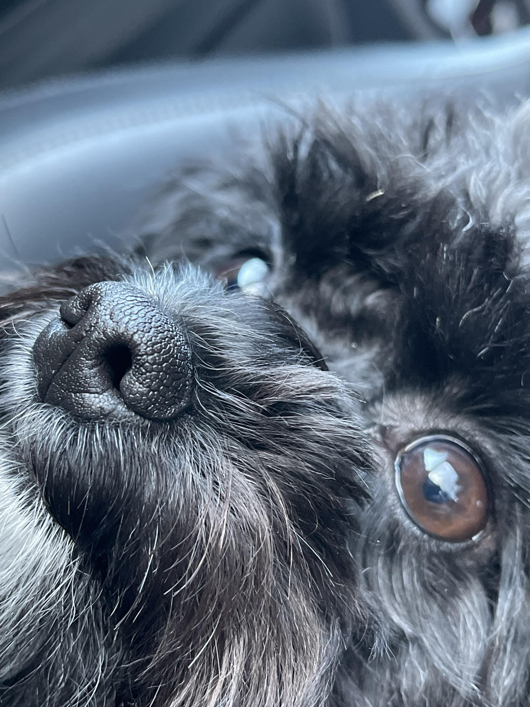

Welcome to Michael's Favorite Things!
A CSIT 121 Project
This is the homepage for my website. My website will have a little information about my three favorite things as well as some information about who I am. I will apply everything I have learned so far in CSIT 121 to design this website. I hope you enjoy it!
